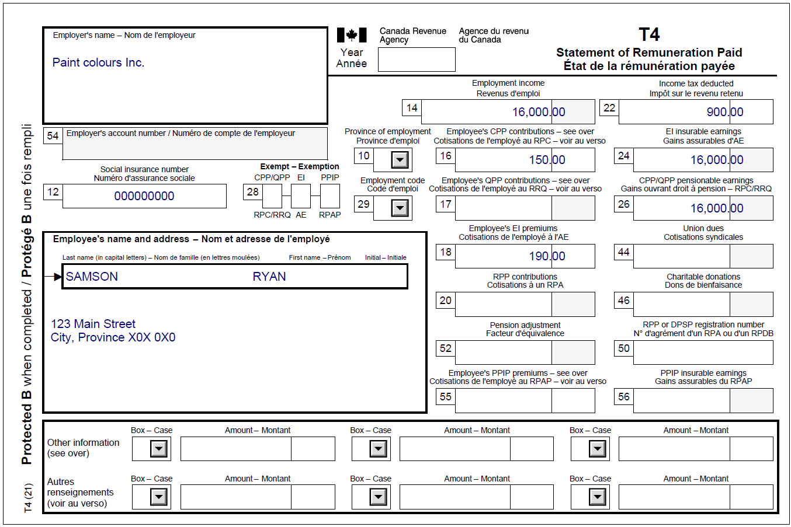

Claiming child care expenses (special cases)
Pre-test question
Sorry, that's incorrect
The spouse with the lower net income must claim the deduction for child care expenses, unless there exists a special situation as described on form T778 Child Care Expenses Deduction.
Note: When no special situation applies, UFile will automatically determine which person will claim the deduction.
That's correct
The spouse with the lower net income must claim the deduction for child care expenses, unless there exists a special situation as described on form T778 Child Care Expenses Deduction.
Note: When no special situation applies, UFile will automatically determine which person will claim the deduction.
Instructions
- Open the tax software
- Review the Background information and Required slips (tax slips, receipts, etc.)
- Provide all required information for the appropriate sections of the tax software
- Once completed, compare your results with the solution provided
- Afterwards, refer to the Takeaway points
Background information
Situation
Ryan lives with his wife Jessica and his two children, Jace and Jackie. Although Ryan worked full time at the beginning of the year he was hospitalized on February 20, 2022, and was not discharged until August 27, 2022. He soon returned to work part time while his wife, Jessica, continued to work full-time as a grocery store manager. During this time, their two children attended daycare.
Identification information
| Name | Ryan Samson |
|---|---|
| Social insurance number (SIN) | 000 000 000 |
| Address | 123 Main Street City, Province X0X 0X0 |
| Date of birth (DOB) | November 15, 1983 |
| Marital status | Married to: |
| Number of children (2) | Son: Jace Samson |
Required slips
T4 – Statement of Remuneration Paid (For Ryan)
Text version of the T4 slip
T4 – Statement of Remuneration Paid
Protected B
Employer's name: Paint colours Inc.
Employee's name and address:
Last name: Samson
First name: Ryan
123 Main Street
City, Province X0X 0X0
Box 12: Social insurance number: 000 000 000
Box 14: Employment income – line 10100: 16,000.00
Box 16: Employee's CPP contributions – line 30800: 150.00
Box 18: Employee's EI premiums – line 31200: 190.00
Box 22: Income tax deducted – line 43700: 900.00
Box 24: EI insurable earnings: 16,000.00
Box 26: CPP/QPP pensionable earnings: 16,000.00
T4 – Statement of Remuneration Paid (For Jessica)

Text version of the T4 slip
T4 – Statement of Remuneration Paid
Protected B
Employer's name: Smart produce Inc.
Employee's name and address:
Last name: Samson
First name: Jessica
123 Main Street
City, Province X0X 0X0
Box 12: Social insurance number: 000 000 000
Box 14: Employment income – line 10100: 34,000.00
Box 16: Employee's CPP contributions – line 30800: 200.00
Box 18: Employee's EI premiums – line 31200: 230.00
Box 22: Income tax deducted – line 43700: 1,800.00
Box 24: EI insurable earnings: 34,000.00
Box 26: CPP/QPP pensionable earnings: 34,000.00
Over the Rainbow Daycare receipt

Text version of the daycare receipt
Over the Rainbow Daycare receipt
Ryan Samson and Jessica Samson paid the following amount in 2022 for child care services for their children:
Jace Samson (son)= $2,500.00
Jackie Samson (daughter)= $2,500.00
The child care fees mentioned above are from January 2022 to December 2022.
Review your results
Solutions will be available in February 2023 as printable PDF.
Takeaway points
Steps to follow
- Review their background information and required slips
- Click add dependant next to Family Head (Ryan) to add each dependant
- Complete the Dependant Identification section for each child
- Click Child care in the left-side menu of each dependant’s profile, then select the type of child care expenses from the drop-down menu to enter the amount paid for that child
- Using the profile for the individual with the higher net income, click Interview setup in the left-side menu, then tick the box next to Child care (special cases) in the Parents and children section
- Click Child care (special cases) from the left-side menu and click the + sign next to A special situation allows you to claim child care expenses even though your earnings are higher than your spouse’s
- Using the Higher Income earner’s profile, enter the number of weeks during the year that any of the special cases listed apply to their situation
The tax software calculates how much of the child care expenses may be claimed on the higher income earner’s tax return. If any remaining amounts may be claimed on the lower income earner's tax return, the tax software automatically claims them based on the information provided.
Although Jessica is the higher income earner, she claims the full amount of the child care deduction since Ryan was temporarily hospitalized.
For more information refer to UFile instructions.